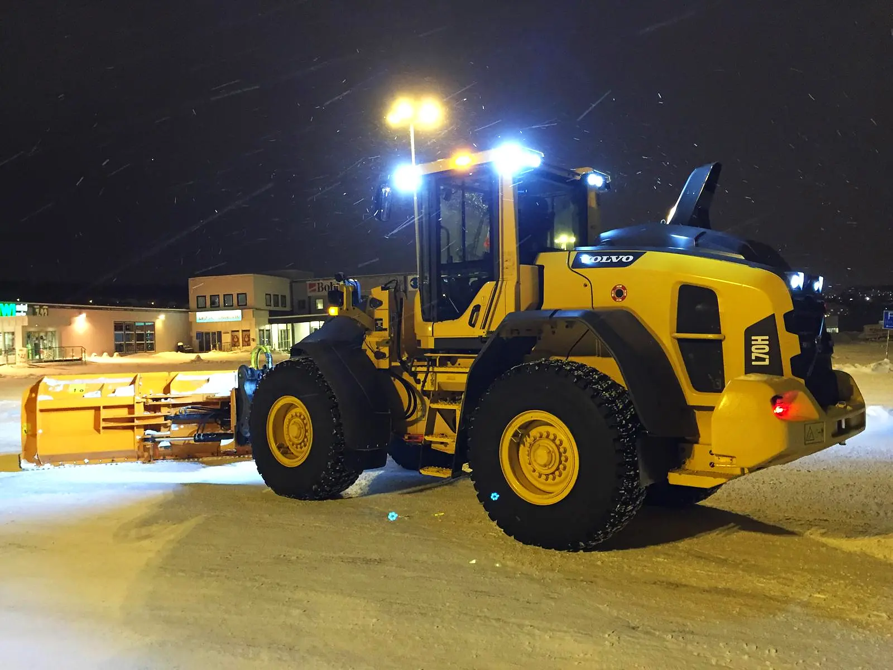
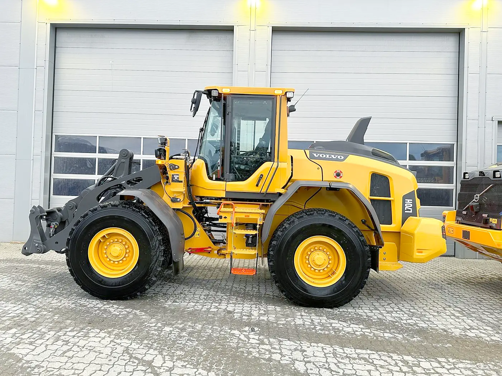
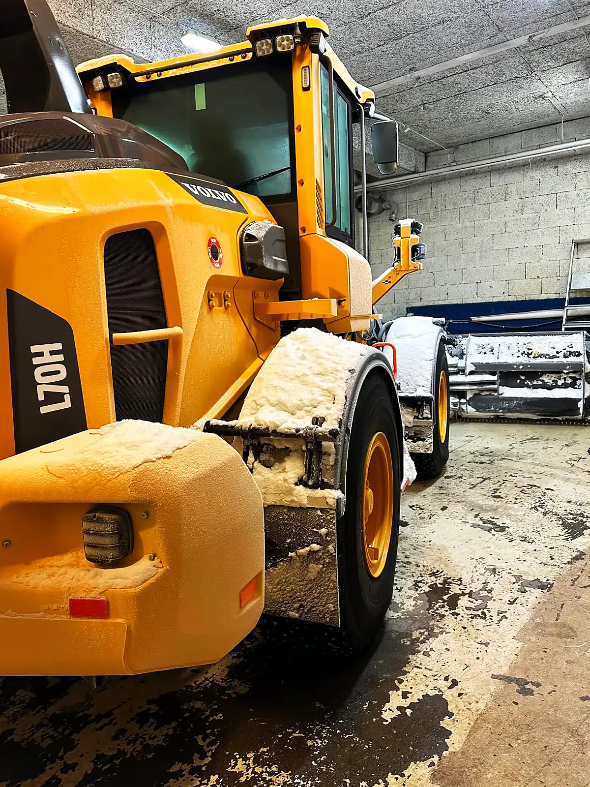

MaskinparkFleet
Toppmoderne. Godt utstyrt.Modern. Well equipped.
Nyeste miljøgodkjenning og utstyr som gir trygge førere og sikkerhet for alle rundt maskinen.The latest emission approval and equipment that keeps operators safe, and everyone around the machine.

3 stk toppmoderne Volvo L70H2 · Steg V3 state-of-the-art Volvo L70H2 · Stage VVolvo L70H2
2026Steg VVolvo L70H2
2025Steg VVolvo L70H2
2025Steg VHvorfor det betyr noeWhy it matters
Trygt for alleSafe for everyone
EU Steg VEU Stage V
Strengeste utslippskrav for anleggsmaskiner.The strictest emission standard for construction machines.
Lys og varslingLights and warnings
Ser og blir sett i mørke og snøfokk.Sees and is seen in darkness and blowing snow.
Riktig redskapThe right tool
U-plog, bred plog og skuffe.U-plough, wide plough and bucket.
Godt førerhusA good cab
Uthvilte førere med god oversikt rundt maskinen.Rested operators with a clear view around the machine.
Ved behovWhen needed
Via samarbeidspartnereThrough partners
- Volvo L110HStørre oppdragLarger jobs
- Volvo L90 ElectricElektriskElectric
- Volvo L25 ElectricElektriskElectric

KontaktContact
Klar for vinteren?Ready for winter?
Fortell oss hva du trenger, så avtaler vi en befaring.Tell us what you need and we will arrange a site visit.